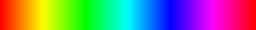

ColorMaps in OpenCV¶
applyColorMap¶
Applies a GNU Octave/MATLAB equivalent colormap on a given image.
-
C++:
applyColorMap(InputArray src, OutputArray dst, int colormap)¶ Parameters: - src – The source image, grayscale or colored does not matter.
- dst – The result is the colormapped source image. Note:
Mat::create()is called on dst. - colormap – The colormap to apply, see the list of available colormaps below.
Currently the following GNU Octave/MATLAB equivalent colormaps are implemented:
enum
{
COLORMAP_AUTUMN = 0,
COLORMAP_BONE = 1,
COLORMAP_JET = 2,
COLORMAP_WINTER = 3,
COLORMAP_RAINBOW = 4,
COLORMAP_OCEAN = 5,
COLORMAP_SUMMER = 6,
COLORMAP_SPRING = 7,
COLORMAP_COOL = 8,
COLORMAP_HSV = 9,
COLORMAP_PINK = 10,
COLORMAP_HOT = 11
}
Description¶
The human perception isn’t built for observing fine changes in grayscale images. Human eyes are more sensitive to observing changes between colors, so you often need to recolor your grayscale images to get a clue about them. OpenCV now comes with various colormaps to enhance the visualization in your computer vision application.
In OpenCV 2.4 you only need applyColorMap() to apply a colormap on a given image. The following sample code reads the path to an image from command line, applies a Jet colormap on it and shows the result:
#include <opencv2/contrib/contrib.hpp>
#include <opencv2/core/core.hpp>
#include <opencv2/highgui/highgui.hpp>
using namespace cv;
int main(int argc, const char *argv[]) {
// Get the path to the image, if it was given
// if no arguments were given.
string filename;
if (argc > 1) {
filename = string(argv[1]);
}
// The following lines show how to apply a colormap on a given image
// and show it with cv::imshow example with an image. An exception is
// thrown if the path to the image is invalid.
if(!filename.empty()) {
Mat img0 = imread(filename);
// Throw an exception, if the image can't be read:
if(img0.empty()) {
CV_Error(CV_StsBadArg, "Sample image is empty. Please adjust your path, so it points to a valid input image!");
}
// Holds the colormap version of the image:
Mat cm_img0;
// Apply the colormap:
applyColorMap(img0, cm_img0, COLORMAP_JET);
// Show the result:
imshow("cm_img0", cm_img0);
waitKey(0);
}
return 0;
}
And here are the color scales for each of the available colormaps:
| Class | Scale |
|---|---|
| COLORMAP_AUTUMN | 
|
| COLORMAP_BONE | 
|
| COLORMAP_COOL | |
| COLORMAP_HOT | 
|
| COLORMAP_HSV |  |
| COLORMAP_JET | 
|
| COLORMAP_OCEAN | 
|
| COLORMAP_PINK | 
|
| COLORMAP_RAINBOW | 
|
| COLORMAP_SPRING | 
|
| COLORMAP_SUMMER | 
|
| COLORMAP_WINTER | 
|
Help and Feedback
You did not find what you were looking for?- Ask a question on the Q&A forum.
- If you think something is missing or wrong in the documentation, please file a bug report.